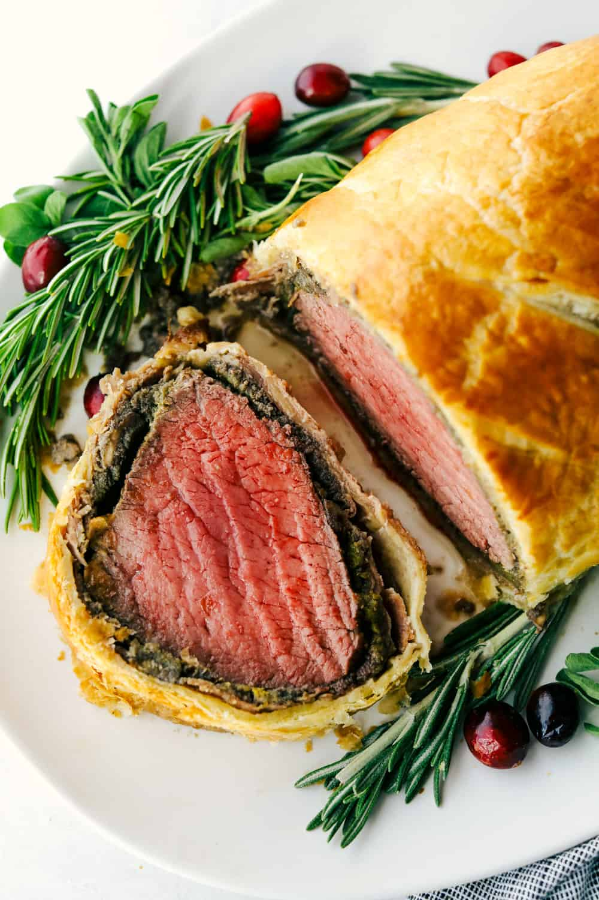

Beef Wellington

Description
This Beef Wellington recipe is a decadent, tender, and juicy beef tenderloin with a layer of mustard, mushroom duxelles,
and prosciutto wrapped in a soft, buttery pastry that is cooked until golden brown. A holiday favorite!
Ingredients
- 2-3 pound beef tenderloin
- salt and pepper
- 2 tablespoons olive oil
- 1 pound mushrooms
- 1/4 cups of diced onion
- 3 garlic cloves
- 6-8 slices of proscuitto
- 3 tablespoons yellow mustard
- 1 sheet puff pastry
- 2 eggs, beaten
Steps
- Sear the tenderloin.Generously salt and pepper your tenderloin. In a large skillet over medium high heat add the olive oil.
Sear the tenderloin on each side for about 2-3 minutes until it gets a golden brown crust. Remove from the heat and set aside.
- Prepare mushroom duxelles.In a food processor, add the mushrooms, garlic, and onion. Pulse in the food processor until it becomes puree.
Heat your skillet to medium-high and add the mixture. Sauté the mushrooms until you have the moisture left. Remove from heat and let cool.
- Wrap the tenderloinRoll out some plastic wrap and lay the prosciutto so they are even and overlap.
Spread the mushroom mixture on top leaving an inch boarder from the sides. Rub the mustard on the tenderloin and then roll the tenderloin up in the prosciutto and mushroom mixture
folding up the sides around the tenderloin as you roll. Wrap the plastic wrap tightly around the beef and refrigerated for 30 minutes.
- Preheat oven to 400 degrees. Roll the puff pastry sheet out on a lightly floured surface. Place the tenderloin in the center.
Brush the egg mixture around the tenderloin on the sheet and roll the tenderloin tightly in the pastry. Brush the remaining egg mixture on the outside of the pastry and cut slits in the top
- Bake the wellingtonBake until the pastry is golden and the beef registers to 120 degrees for medium rare. About 45 minutes.
Remove the from the oven and let rest for 10 minutes before slicing.